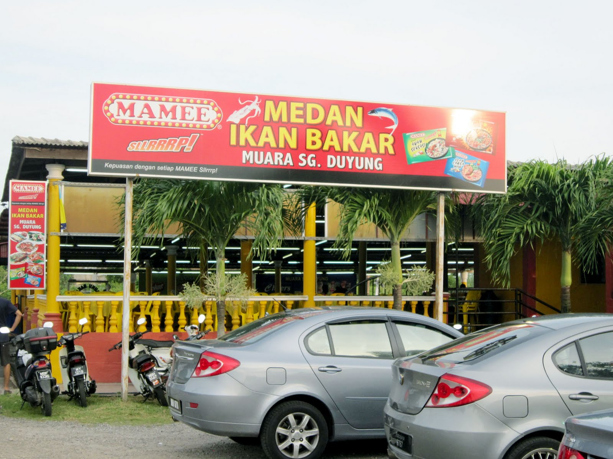

Melaka's Culinary Delights: A Gastronomic Journey Through Time
Explore the rich tapestry of flavors that define Melaka's food culture. From its multicultural heritage to its vibrant street food scene, we'll take you on a mouthwatering journey through this UNESCO-listed city's culinary treasures.
Nyonya Cuisine: A Taste of Tradition
The heart of Melaka's culinary heritage lies in its Nyonya cuisine, a fusion of Chinese and Malay flavors. Savor dishes like Chicken Pongteh, a flavorful chicken stew, and Nyonya Laksa, a coconut milk-based noodle soup. These dishes offer a tantalizing glimpse into the history of the Peranakan community in Melaka.
Satay Celup: The Hot Pot Sensation
Melaka is famous for its unique take on the classic satay. Satay Celup involves skewering various ingredients like seafood, vegetables, and meat on sticks, then cooking them in a communal pot of boiling satay sauce. The result? A spicy, flavorful delight that's perfect for sharing.

Jonker Street Hawker Stalls: Street Food Extravaganza
Jonker Street, a bustling night market, transforms into a food lover's paradise when the sun sets. Sample a wide array of street food, from fragrant chicken rice balls to melt-in-your-mouth Nyonya kuih (cakes). Don't forget to try the famous Cendol, a sweet and icy dessert topped with palm sugar syrup and coconut milk.
Hard Rock Cafe Melaka
Hard Rock Cafe Melaka is more than just a restaurant; it's a haven for music enthusiasts, foodies, and those seeking a memorable night out. Nestled in the heart of Melaka, this iconic establishment combines the timeless spirit of rock 'n roll with a menu of mouthwatering American classics.
Medan Ikan Bakar Muara Sg Duyong
The heart of Melaka's culinary heritage lies in its Nyonya cuisine, a fusion of Chinese and Malay flavors. Savor dishes like Chicken Pongteh, a flavorful chicken stew, and Nyonya Laksa, a coconut milk-based noodle soup. These dishes offer a tantalizing glimpse into the history of the Peranakan community in Melaka.

Nancy's Kitchen
For an authentic taste of Peranakan cuisine in Melaka, look no further than Nancy's Kitchen. This charming restaurant, nestled in the heart of the city, offers a delightful menu of Nyonya dishes, prepared with love and tradition.